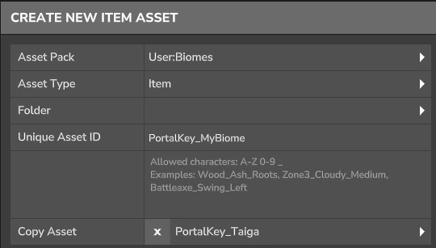
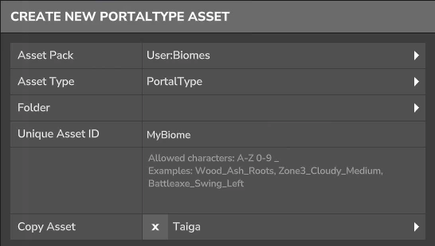
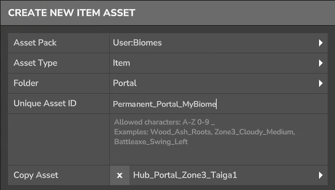

Creating a new World is one thing, but melding it into the Gameplay of a Player's playthrough is another!
You can either
Set your new World as the Default World
Create a new 'Fragment of Orbis' to visit temporarily
Craft a new Portal to create another Permanent World
Making your new World as the Default is the easiest!
First, you'll need to make sure the World is set to Save and last Permanently. Below is an example of that configuration.
You can also set these values on an already created World Save file or use the /worlds settings ... command in game.
instance.bson{
...
"IsSavingPlayers": true,
"IsSavingChunks": true,
"SaveNewChunks": true,
"IsUnloadingChunks": true,
"DeleteOnUniverseStart": false,
"DeleteOnRemove": false,
...
}
And then you can type these commands in order:
/instance - Opens Instance Menu to create a New World. Select 1 and click 'Spawn.' /worlds list - To List all the Created Worlds
(Copy the World Name either from the List or the Folder located in your Saves File) /worlds setdefault [World Name] - Sets this World as the Default World everyone spawns into!
The second and most common method will be to create a Fragment Portal Key!
As explained in the World's Section, the Ancient Gateway
acts as a conduit for any Portal Fragment Keys either Hytale or Custom, so let's create a Custom one! The best way to start is
to have a good base so let's create a new Item that copies from an existing Portal Key!

Feel free to edit anything here however you like, like the crafting and rendering of the item as the only detail that matters here is
the 'PortalKey' attribute listed under the 'Functionality.' What lies here is a reference to a 'PortalType' file
and an ability to override the PortalType's time limit and player limit.
PortalKey_MyBiome
Item
Portal Key
Portal Type
[PortalType Asset Name]
Time Limit Seconds
Allowed Entry Count
...
Before we can set these values, we now need to create our own Portal Type!

From here we can define and override many behaviors of the Instance that'll be spawned. Everything listed here should be relatively
self explanatory, but feel free to experiment otherwise! I'll just mention the most important one for this guide and that is to set
the 'Instance Id' to the Instance you wish to load upon a player entering the Portal! The path and name should appear the same as in the
/instances menu, skipping the name of the Asset Pack.
MyBiome
PortalType
Instance Id
[Instance Name]
...
Finally, remember to reference our new Portal Type in our PortalKey Item! Also, it's recommended to set the 'DeleteOnRemove' to 'false' in the
instance file so the World gets deleted when the Server doesn't need it anymore!
The second way is creating Permament World Portals! Similar to the Hob Portals in the Crossroads when you create a new Creative World!
Speaking of Hub Portals, let's copy the asset to see how it works!

Traversing to the 'Block/Interactions' we'll find the exact component we're looking for in 'CollisionEnter.' Upon a player colliding with the
Block, if a World exists called 'zone3_taiga1_world,' it'll teleport the player into the world. If not, the game will create a new World
from the 'Regions/Zone3_Taiga1' instance template and then teleport the player into it. These names can of course be changed to whatever we desire.
Permament_Portal_MyBiome
Item
Block Type
Interactions
1 Map Entries
Collision Enter
Interactions
0
Type
HubPortal
World Name
zone3_taiga1_world
Instance Template
Regions/Zone3_Taiga1
...
After this, all you need to do is setup a crafting configuration for it!
This world will last as long as the instance file has the same properties listed in the making your world the default world which
has been included again below!
instance.bson{
...
"IsSavingPlayers": true,
"IsSavingChunks": true,
"SaveNewChunks": true,
"IsUnloadingChunks": true,
"DeleteOnUniverseStart": false,
"DeleteOnRemove": false,
...
}Next Up